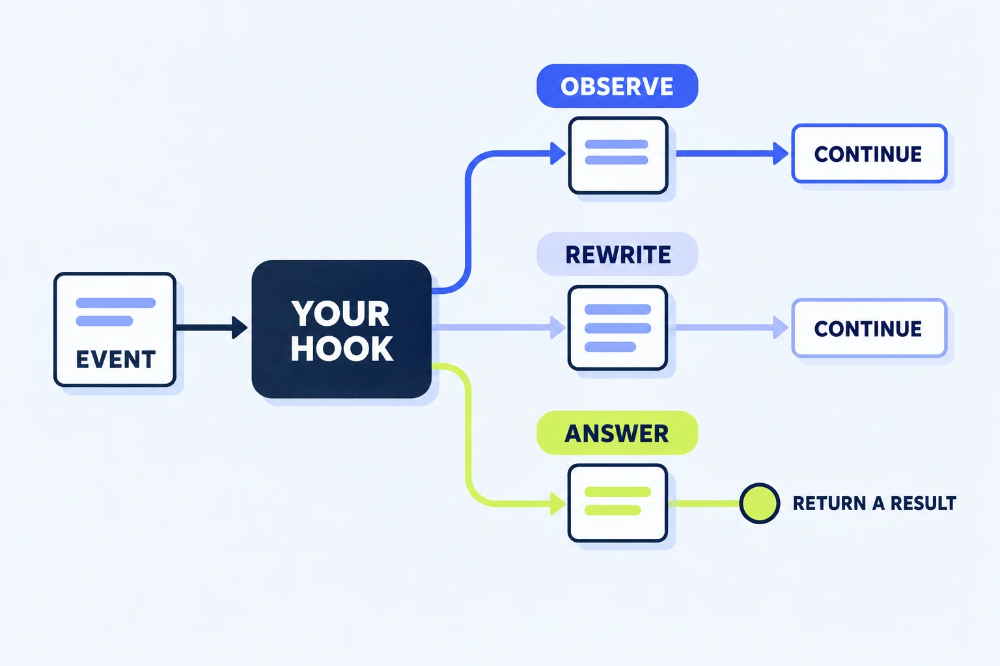

Skill or command
Reusable instructions for a recurring job. Our Cowork command asks for an experiment card with four fields.
“Do this the way I like.”Open-source learning lab
A small, hands-on guide to customizing Claude. Try an example, follow the code, and change one thing.

A click can change the UI without a model request.
Same desktop app. Different extension surfaces. Cowork workflow commands and Claude Code UI mods have different capabilities. This guide gives you a working starting point for each. Choose your surface →
01 / CHOOSE A PATH
Choose a path. You can explore the browser explainer below before installing anything.
Surface support: official mods documentation · Cowork setup: official plugin help. Labels and availability vary by rollout and organization policy.
02 / THE BUILDING BLOCKS
Start with the smallest extension that solves your problem. A UI mod is one option in a larger toolkit.
Reusable instructions for a recurring job. Our Cowork command asks for an experiment card with four fields.
“Do this the way I like.”Tools or data supplied by an external service or process. The starter doesn’t need a connected account.
“Reach this system.”The package people install. This repo ships two independent plugins through one small marketplace.
“Bundle these pieces.”Code inside a Claude Code plugin that reacts to events. Our mod adds a pane and changes selected behavior.
“React when this happens.”03 / THE EVENT LOOP
A hook receives an event and decides what happens next. Try all three choices in this browser simulation.
Observe the call and pass the same event to the next handler.
Ready. Nothing has run yet.
$, e, and next?$ · the host APIe · the eventnext(e) · continue the chainon('tool.call', async ($, e, next) => {
calls += 1;
$.ui.invalidate('ui.render');
return next(e);
});Counting is ordinary JavaScript. Redrawing is a host API call. Forwarding preserves the tool’s normal behavior.
04 / WORKING EXAMPLES
These excerpts are extracted from the actual starter when the site builds. Pick a recipe, then open its surrounding source.
05 / YOUR FIRST CHANGE
Keep a working baseline. Change a small behavior. Check the result where you intend to use it.
In Cowork, run the experiment command with the supplied notes. In Code, open /kitchen and click the counter. Write down what you expect to change.
Change a field name in commands/experiment.md, or change the counter button’s label in hooks/register.js. Repackage Cowork; use --plugin-dir for Code’s edit/reload loop.
Invoke the command again or press the button. Run the relevant checks, then record the app surface and version. A host test can validate an element tree; the app still needs a visual check.
No npm install is needed. Node.js 20+, Python 3.9+, and a recent Claude Code are enough for the full set.
npm test npm run validate npm run test:native npm run site:build npm run site:check
06 / GET UNSTUCK
The Cowork plugin demonstrates prompt commands. The UI pane belongs to the separate kitchen-sink mod in a supported Claude Code session. Start with the Desktop Code or Terminal path above.
Check /plugin for an active kitchen-sink mod, then /status for the version. Validate the correct plugin directory. In an existing session, try /reload-plugins. Managed policy can prevent mods from loading.
Run /kitchen-status and inspect the reported surfaces. Headless sessions do not draw. Remote Control shows mod drawings in the host terminal. VS Code has different supported render sites, and the full desktop example should be checked in a local Code session.
For mod development, launch with --plugin-dir ./plugins/kitchen-sink from the repository root. An installed marketplace copy may differ from your working tree. For Cowork, rebuild the ZIP and re-upload. In-memory counters reset when the module reloads.
It preserves an existing prompt. Clear or send your draft first; the button displays a notice instead of combining unrelated text. It fills the box and leaves sending to you.
The sample guard only checks the plugin’s imaginary mixing tool. It is a teaching example, not a general shell policy. Read the host’s permission and managed-policy documentation before designing real controls.
Use the Notes tab’s delete button for the saved note. For an installed plugin, open /plugin and disable or uninstall it. A session loaded with --plugin-dir stops using that copy when you exit. In Cowork, remove the uploaded plugin through Customize.